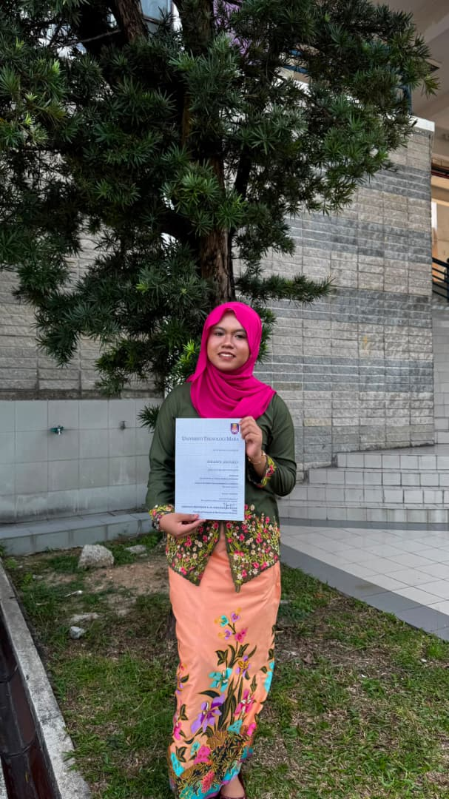

Professional experience
Event Assistant · Impiana KLCC Hotel
Role summary
- Supported the Petronas Appreciation Dinner through guest management, venue preparation and event coordination.
- Worked with the event team to deliver formal corporate activities smoothly and professionally.
- Assisted on the ground with hospitality-focused guest and programme needs.
- Developed event-management, hospitality, teamwork and communication skills.
Moments


